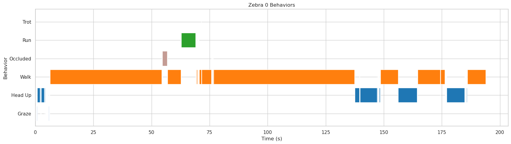

Worked Example for Grevy's Zebras Time-Budget Analysis¶
This session includes two male Grevy's zebras travelling across an open plain on the 18th of January, 2023, between 12:45 and 13:00.
 Figure 1: Flight path (left) tracking 2 male Grevy's zebras observed on 01/18/23. Video clip (right) from KABR dataset.
Figure 1: Flight path (left) tracking 2 male Grevy's zebras observed on 01/18/23. Video clip (right) from KABR dataset.
Step 1: Download raw videos from session 7 on the 18th of January, 2023¶
You can download the raw videos directly from the KABR Raw Videos dataset.
The videos files are: \ 18_01_18_DJI_0068_trimmed \ 18_01_18_DJI_0069 \ 18_01_18_DJI_0070 \ 18_01_18_DJI_0071
mkdir -p grevystimebudget/raw_videos
cd grevystimebudget/raw_videos
wget https://huggingface.co/datasets/imageomics/KABR-raw-videos/blob/main/18_01_2023_session_7/DJI_0068_trimmed.mp4
wget https://huggingface.co/datasets/imageomics/KABR-raw-videos/blob/main/18_01_2023_session_7/DJI_0069.mp4
wget https://huggingface.co/datasets/imageomics/KABR-raw-videos/blob/main/18_01_2023_session_7/DJI_0070.mp4
wget https://huggingface.co/datasets/imageomics/KABR-raw-videos/blob/main/18_01_2023_session_7/DJI_0071.mp4
cd ../..
Step 2: Extract mini-scenes from raw videos using tracks_extractor¶
You can download the CVAT annotations for these from the KABR Worked Examples dataset.
The annotations files are:
18_01_2023_session_7-DJI_0068.xml \ 18_01_2023_session_7-DJI_0069.xml \ 18_01_2023_session_7-DJI_0070.xml \ 18_01_2023_session_7-DJI_0071.xml \
mkdir -p grevystimebudget/annotations
cd grevystimebudget/annotations
wget https://huggingface.co/datasets/imageomics/kabr-worked-examples/blob/main/detections/18_01_2023_session_7-DJI_0068.xml
wget https://huggingface.co/datasets/imageomics/kabr-worked-examples/blob/main/detections/18_01_2023_session_7-DJI_0069.xml
wget https://huggingface.co/datasets/imageomics/kabr-worked-examples/blob/main/detections/18_01_2023_session_7-DJI_0070.xml
wget https://huggingface.co/datasets/imageomics/kabr-worked-examples/blob/main/detections/18_01_2023_session_7-DJI_0071.xml
cd ../..
Now you can use the tracks_extractor tool to extract mini-scenes from the raw videos using the CVAT annotations.
mkdir -p grevystimebudget/miniscenes
tracks_extractor --video grevystimebudget/raw_videos --annotation grevystimebudget/annotations --imshow --tracking
miniscenes in the grevystimebudget directory with the extracted mini-scenes.
The --imshow flag will display the mini-scenes as they are being extracted, and the --tracking flag will enable tracking of individuals across frames.
This process may take a while depending on the number of videos and annotations.
# Example output:
Processing video: grevystimebudget/raw_videos/18_01_18_DJI_0068.mp4
Extracted 150 mini-scenes from 18_01_18_DJI_0068.mp4
See mini-scenes extracted for this session here: grevystimebudget/miniscenes
Step 3: Label mini-scenes with behavior using miniscene2behavior¶
You can use the x3d_kabr_kinetics tool to classify behaviors in the extracted mini-scenes.
Download model weights from Hugging Face.
mkdir -p grevystimebudget/classified_behaviors
miniscene2behavior --hub imageomics/x3d-kabr-kinetics --checkpoint x3d_kabr_kinetics.pyth --miniscene grevystimebudget/miniscenes/ --output grevystimebudget/mini_scene_behavior_annotations/DJI_0068_annotations.csv
DJI_0068_annotations.csv in the /mini_scene_behavior_annotations directory.
See behavior classifications extracted for this session here: grevystimebudget/mini_scene_behavior_annotations
Step 4: Perform Ecological Analysis¶
We can analyze the behavior annotations labeled in Step 3 to create time budgets for the individuals observed in this session.
See the time budgets notebook for the code to create the visualizations.
Key step: convert the behavior labels generated by the miniscene2behavior to labels using the ethogram used in the field observations.
label2number = {
"Walk": 0,
"Graze": 1,
"Browse": 2,
"Head Up": 3,
"Auto-Groom": 4,
"Trot": 5,
"Run": 6,
"Occluded": 7}
 Figure 2: Overall time budget for duration of 10 minute observation
Figure 2: Overall time budget for duration of 10 minute observation

 Figure 3: Gantt chart for each zebra generated from time budget data (3 minute duration)
Figure 3: Gantt chart for each zebra generated from time budget data (3 minute duration)
{kind=link}